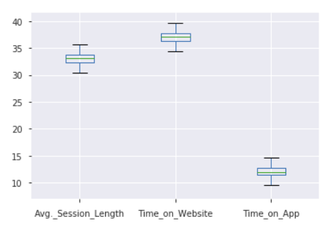
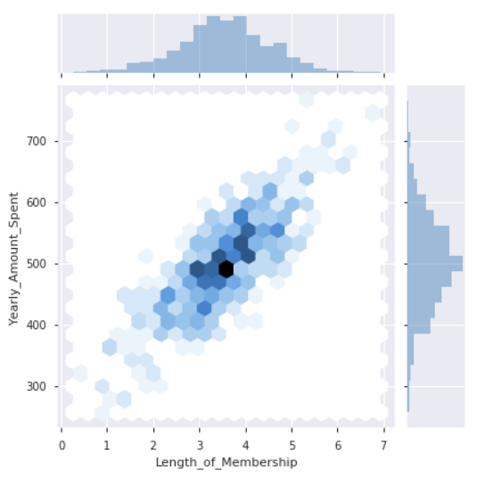
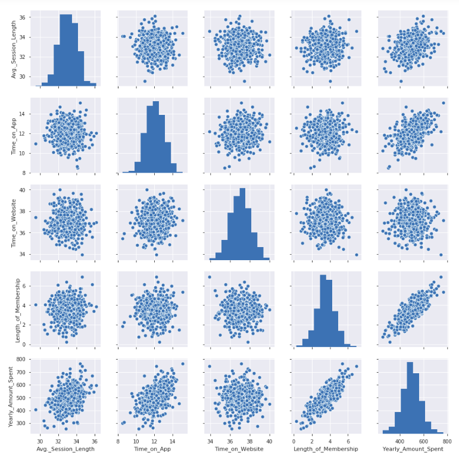
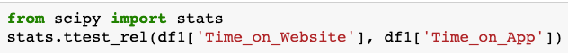
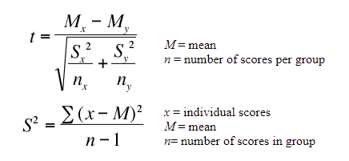
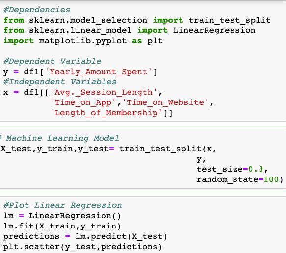
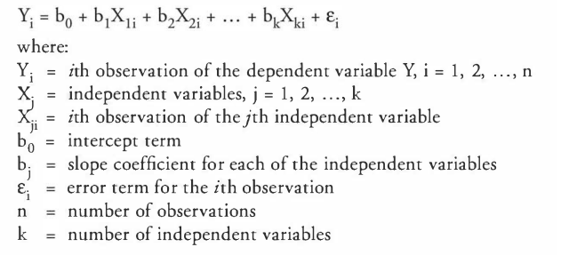
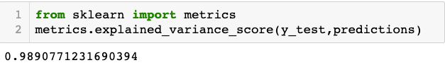
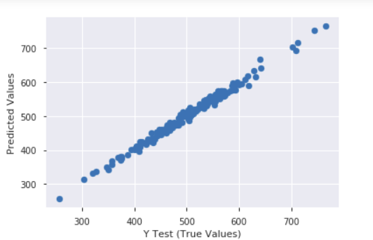
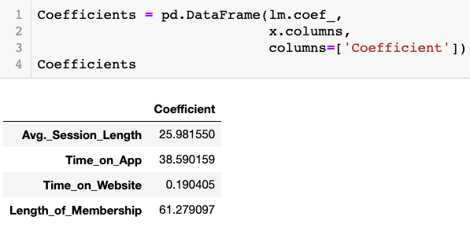

Home
Gallery
Visual Report Sample
Statistical Report Sample
Resumé
Statistical Report
Description:
The present analysis was made using a randomized represenative sample from a digital bookstore's custumer database. The purpose is to identify whether or not the users' behaviour changes depending on the platform they use to interact with the company, either the Website or the Mobile App.
Question:
Is there a significant difference in the behaviour of users depending on the platform they use?
Ho (Null Hypothesis):
There is no significant difference in the behaviour of users.
Ha (Alternative Hypothesis):
There
is
significant difference in the behaviour of users.
Decision Rule:
If p < 0.05, we accept
Ha
, otherwise we fail to reject
Ho
.
Exploratory Data Analysis:
First Insights:
1)
From the descriptive statistics above, we can see that user's behaviour is different when they use the App than when visiting the Website. They spend three times longer on the Website than they do on the App. Let's plot them:

2)
bThe typical user spends $500.00 a year, and has been a member for 3.5 years, as the plot bellow shows:

3)
The best predictors of Yearly Purchase (
y
) seem to be Membership Seniority(
x1
) and Time on App (
x2
). These two factors seem to have a positive linear correlation with the Yearly Amount Spent by user.

Let's plot an interactive 3-D Multivariate Scatterplot to visualize how the three variables behave together:
The three variables seem to have a positive correlation.
With all this information, let's perform some statistical tests to measure the significance of difference of means of platform usage by users and the degree of correlation among variables.
Statistical Tests:
T-Test on The Means of Two Dependent Samples
Even though the boxplot visibly showed that the mean of time on the Website is three times higher than the mean of the time the same user spends on the App, it is convenient for statistical procedure to measure the significance of such a difference. To do so, we will perform a T-Test for Dependent Samples as the measures are from the same users on different platforms.
In Python, we can run the following code using the library
scipy
:

Which performs the following operation: 
It gives us a result of
p = 0.0001
. Following the decision rule, as
p < 0.05
we reject
Ho
and accept
Ha
. Meaning that at 99% of confidence, we can prove that there is a significant difference in the behaviour of users depending on the platform they use.
Multiple Linear Regression
From the various correlation matrices plotted above, we have noticed some degree of linearity in the relationship among some variables. Now our task is to measure the degree by which some variables can explain another. In this case our dependent variable
y
, namely the one to be explained or predicted, is "Yearly Amount Spent", and our independent variables, it is to say, those that will explain
y
, will be "Length of Membership"
x1
, and "Time on App"
x2
.
In Python we can run the following code using the Machine Learning library
scikit-learn
: 
Which run in the background the following equation:

This model returns a fit level of
0.98
, which means that is 98% accurate:


Now that we can trust our model's accuracy, we proceed to calculate the coefficients of determination, which explain the extent to which our independent variables explain or predict the dependent variable.

These coefficients show that when the "Length of Membership" increases by 1 per year, we can expect "Yearly Amount Spent" to increase by $61.
Every time that the "Time on App" increases by 1, we can expect "Yearly Amount Spent" to increase by $38.5.
Surprisingly, if "Time on Website" increases by 1, we can expect "Yearly Amount Spent" to increase only by $0.2.
From the results above, we need to ask; how is it possible that "Time on App" correlates with "Yearly Amount Spent" by $38.5 per time unit, but "Time on Website" does not correlate at all, even though users tend to spend three times more on the Website than on the App?
Let's take a closer look at those variables and compare them. The following graphs are interactive. At first we see that indeed there is no correlation between "Time on Website", and "Yearly Amount Spent", while there is a moderate correlation between "Time on App" and "Yearly Amount Spent." If we select with the cursor the region of those users spending above average a year, we will see that these same users generally spend more time on the App, while on the Website they seem not to follow any pattern. Indeed, when we select that region of users, the correlation between "Time on Website" and "Yearly Amount Spent" turn even negative, while "Time on App" remain positively correlated with "Yearly Amount Spent."
Summary and Recomendations:
1) Users behave differently depending on the platform they use to engage with the company.
2) Even though users tend to be three times longer on the Website than on the App, that time is not related to their purchase activity. Users might spend that time on activities like reading articles on the company's blog, which is a time consuming activity that is not directly related to the store. The company might benefit from connecting the blog content with the store.
3) The time users spend on the App is more efficiently profitable. Users tend to use the App to purchase products within a short period of time.
4) Seniority of membership is highly correlated with yearly spending. The company might benefit from facilitating renewing membership, especially to those with less than three years. This would increase loyalty.
5) In the case of those who have been members for more than 4 years, the company might benefit from giving loyalty awards in the form of product discounts as they tend to buy more. This would increase sells.
Visual Report Sample